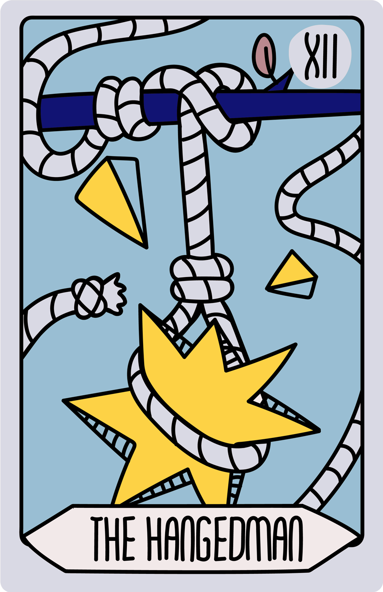

Arti 3(tiga) Kartu Pilihanmu


Opening Track
JUDGEMENT, STRENGHT, THE MAGICIAN
Lo kayak anak skena yang akhirnya sadar kalo udah terlalu lama di zona nyaman. Sekarang waktunya naik level. Semua keputusan ada di tangan lo. Tinggal lo mau tetep di vibe lama atau loncat ke babak baru. Jangan takut, karena semesta lagi ngasih panggilan buat lo bangun.
Kekuatan lo bukan soal galak atau vokal. Kayak lagu mellow yang liriknya nusuk walaupun suaranya pelan. Lo punya inner strength yang bisa nenangin chaos di sekitar lo. Hari ini lo bisa handle apapun tanpa harus drama. Lo kuat karena tau cara sabar.
Semua yang lo butuhin sebenernya udah di tangan lo, kayak musisi indie yang cukup punya gitar sama lirik jujur buat bikin orang mewek. Sekarang saatnya ngambil kendali, jangan nunggu "momen pas" karena dia nggak bakal dateng kalau lo diem aja. Hidup ini kayak lagu, yang bakal beda rasanya tergantung siapa yang mainin. Lo pegang alatnya, lo tentuin nadanya. Jangan takut mulai, karena semesta udah setel background music-nya buat lo.



Now Playing
THE HANGEDMAN, THE TOWER, TEMPERANCE
Lo kayak lagi dengerin lagu lo-fi di kamar gelap, diem, dan mikir. Kadang hidup emang butuh pause, biar lo bisa liat semuanya dari sudut pandang lain. Jangan buru-buru, karena nggak semua hal harus selesai sekarang. Lo cuma perlu diem bentar, biarin waktu muter, dan nanti lo bakal ngerti maksudnya. Kadang surrender itu bukan kalah, tapi bentuk pinter.
Lo kayak dapet kabar yang ngecrash hidup lo tiba-tiba. Kayak sound system di gigs yang tiba-tiba meledak. Nggak enak, chaos, tapi perlu. Kadang hidup harus dihancurin biar bisa dibangun ulang. Nanti lo bakal ngerti, semua ini buat lo jadi versi yang lebih gahar.
Lo kayak lagu folk yang tenang di tengah playlist rusuh. Hari ini vibe lo balance, lo tau kapan harus stay low, kapan harus all out. Semua soal timing. Nggak usah buru-buru, nggak usah terlalu santai juga. Mainin hidup kayak lagu yang dinikmatin tiap nada-nya.
Encore
THE WORLD, THE HGHT PRIESIESS, THE STAR
Akhirnya, lo sampe di titik ini. Kayak lagu penutup di album indie yang bikin lo puas. Semua perjuangan, chaos, dan malam-malam overthinking lo ada hasilnya. Lo lebih kuat, lebih paham, dan lebih chill sekarang. Nikmatin vibe kemenangan ini. Lo layak dapet applause.
Ada bisikan kecil di hati lo yang lebih valid daripada omongan orang. Kayak lagu lama yang tiba-tiba muncul di shuffle playlist lo, dan rasanya "gue banget". Percaya sama insting lo hari ini, karena hal-hal penting seringnya nggak bisa dijelasin pake logika. Semua jawaban yang lo cari ada di dalem diri lo sendiri. Lo cuma butuh diem sebentar buat denger suaranya.
Abis chaos, vibe lo kayak lagu mellow hopeful di akhir album. Ada harapan kecil yang nyala. Pelan-pelan semua mulai jernih, kayak langit abis hujan. Lo boleh berharap, boleh mimpi. Karena semesta lagi bisikin, "Tenang, semua bakal oke."

Skip Track
(Kartu yang lo lewatin, tapi sebenernya ngasih hint vibe tersembunyi di balik shuffle lo.)THE DEVIL
Ada vibe toxic yang nempel kayak lagu galau yang susah di-skip. Entah itu orang, kebiasaan, atau pikiran jelek yang lo pelihara. Lo nyaman di situasi yang nggak sehat, karena udah keburu betah. Sadarnya, lo punya kendali buat cabut kapan aja. Lo cuma perlu berani.